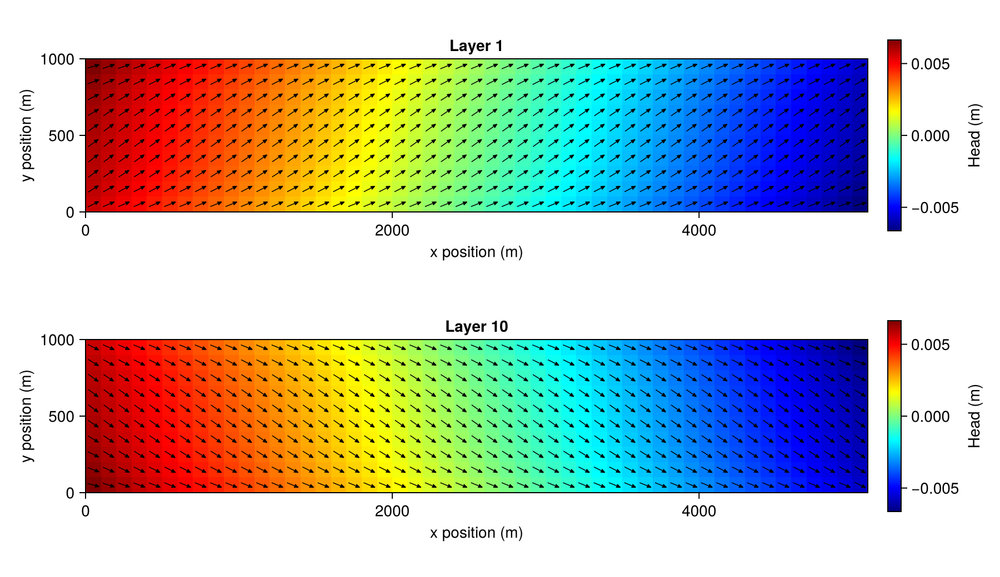
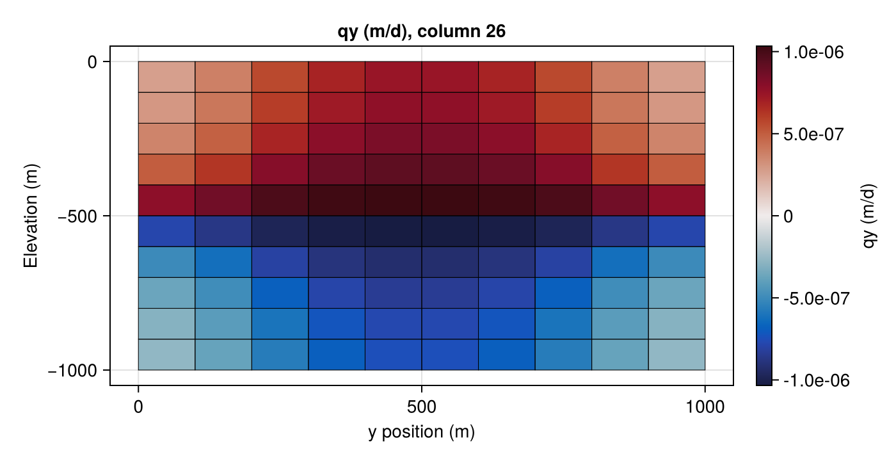
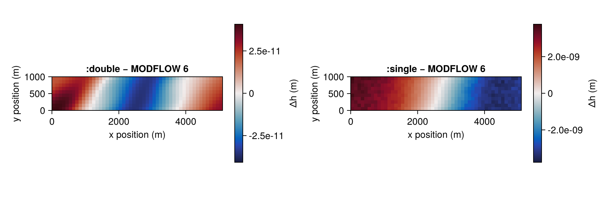

Whirl: a rotated conductivity tensor (XT3D)
A block of 10 layers × 10 rows × 51 columns of 100 m cells, 100 m thick, with a horizontally anisotropic hydraulic conductivity: 1 m/d along the principal direction and 0.1 m/d across it (NPF K22), with K33 = 1 m/d. The principal direction is turned by ANGLE1 = 45° in the upper five layers and −45° in the lower five. Wells inject 0.01 m³/d into every cell of the first column and extract the same from every cell of the last column; there is no other boundary, and the model is steady state.
Water flowing from west to east is pushed to one side in the upper layers and to the other side in the lower layers, so the flow turns around the x axis: a whirl. The flow across each face depends on the full conductivity tensor, which the NPF option XT3D provides. This is the MODFLOW 6 example ex-gwf-whirl.
Input and the MODFLOW 6 run
ExampleTools (docs/ExampleTools.jl in the repository) takes the input from the released mf6examples.zip, sets the tight closures of the parity tests in the IMS file, and runs MODFLOW 6.8.2.
using ModflowGPU, CairoMakie
mf6 = example_run("ex-gwf-whirl")
mf6.mode, mf6.mf6_time("tight", 0.64930098)The ModflowGPU run
In :double and in :single precision on the CPU, with the default options.
runs = Dict(p => run_modflowgpu(mf6.dir, p) for p in (:double, :single))
r = runs[:double].result
r.convergedtrueHeads and flow in the top and the bottom layer
The heads and the direction of the specific discharge (computed from the FLOW-JA-FACE record of ModflowGPU's budget file, as MODFLOW 6 computes it for SAVE_SPECIFIC_DISCHARGE) in layer 1 (ANGLE1 = 45°) and layer 10 (−45°). The flow leaves the injection wells (west) towards the north-east in the upper layers and towards the south-east in the lower layers.
g = read_dis_grid(mf6.dir)
h = read_head(open_head_file(r.head_file), 1)
flowja = vec(only(read_budget(open_budget_file(r.budget_file); text = "FLOW-JA-FACE")))
qx, qy = specific_discharge(g, flowja, h)
fig = Figure(; size = (900, 520))
for (k, l) in enumerate((1, 10))
ax = Axis(fig[k, 1]; aspect = DataAspect(), xlabel = "x position (m)", ylabel = "y position (m)", title = "Layer $l")
hm = map_heatmap!(ax, g, layer_values(h, l); colormap = :jet)
map_vectors!(ax, g, qx[:, :, l], qy[:, :, l]; color = :black)
Colorbar(fig[k, 2], hm; label = "Head (m)")
end
save_figure(fig, "ex-gwf-whirl-head")
The north–south flow (qy, positive north) in a cross-section through the middle column (column 26), south on the left: north in the upper layers, south in the lower ones. The vertical flow that closes the whirl is in the FLOW-JA-FACE record too.
fig = Figure(; size = (700, 360))
ax = Axis(fig[1, 1]; xlabel = "y position (m)", ylabel = "Elevation (m)", title = "qy (m/d), column 26")
lim = maximum(abs, qy[26, :, :])
hm = section_heatmap!(ax, g, qy; column = 26, colormap = :balance, colorrange = (-lim, lim))
section_grid!(ax, g; column = 26)
Colorbar(fig[1, 2], hm; label = "qy (m/d)", tickformat = expformat)
save_figure(fig, "ex-gwf-whirl-section")
Comparison with MODFLOW 6
With wells only and no storage, the heads of this model are defined only up to a constant: adding the same value to every head changes no flow. The linear solver of each program leaves its own constant in the solution (here about 8 × 10⁻⁶ m), so the heads are compared after removing the mean difference, as in the parity tests. The constant removed, in m:
stats = Dict(p => (; cmp = compare_with_mf6(mf6.dir, runs[p]; shift = true), runs[p].time) for p in (:double, :single))
[(p, stats[p].cmp.shift) for p in (:double, :single)]2-element Vector{Tuple{Symbol, Float64}}:
(:double, 8.020564407138149e-6)
(:single, 8.018723352507814e-6)The head differences after removing it:
h6 = read_head(open_head_file(only(filter(endswith(".hds"), readdir(mf6.dir; join = true)))), 1)
function shifted(p)
d = read_head(open_head_file(runs[p].result.head_file), 1) .- h6
return d .- sum(d) / length(d)
end
save_figure(difference_map(g, [":$p − MODFLOW 6" => shifted(p) for p in (:double, :single)]; unit = "m", xlabel = "x position (m)", ylabel = "y position (m)", size = (900, 300)), "ex-gwf-whirl-difference")
The largest head (after the shift) and budget differences, next to the values of the parity table, and the wall times (CPU: this build, including compilation for the first run of the session; GPU: the parity table, AMD Radeon RX 7800 XT).
comparison_table("ex-gwf-whirl", stats)| Preset | max |Δh| (m), this build | max |Δh| (m), parity table | Budget, this build | Budget, parity table | CPU time, this build (s) | GPU time, parity table (s) |
|---|---|---|---|---|---|---|
:double | 4.1e-11 | 4.1e-11 | 4.7e-10 | 4.7e-10 | 0.11 | 0.12 |
:single | 3.8e-09 | 3.8e-09 | 1.6e-07 | 1.6e-07 | 0.22 | 0.08 |
Budget: the largest difference of a budget-file flow or a listing-table rate, relative to the total inflow of its time step.